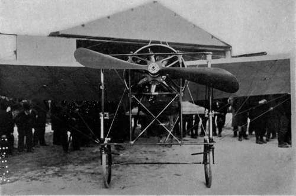

The Propeller. Part 2
Description
This section is from the book "The New Art Of Flying", by Waldemar Kaempffert. Also available from Amazon: The New Art of Flying.
The Propeller. Part 2
It is a significant fact that the conspicuous successes have all been achieved with two-bladed propellers. All recent systematic and comparative experiment points to the fact that a two-bladed propeller is the most efficient, and, at the same time, fortunately, the simplest and lightest.
Authorities are not in accord on the proper position of the propeller. Most of them, however, hold, with Sir Hiram Maxim, that the proper position is in the rear. Blériot (Fig. 46), Levavasseur (who builds the Antoinette machine), and many monoplane designers mount the propeller in front. In its usual position just in advance of the centre, the front propeller interrupts the entering edge. To obviate this, some monoplane builders, among them Santos-Dumont and Blériot (in his passenger-carrying monoplane XII), place the engine and pilot below the plane.
Fig. 46. A Blériot monoplane showing a seven-cylinder, fifty-horsepower rotary Gnome motor. The motor spins around with the propeller at the rate of about 1400 revolutions a minute.
Photograph by Edwin Levick.
On the position of the propeller Maxim says:
" Many experimenters have imagined that a screw is just as efficient placed in front of a machine as at the rear, and it is quite probable that in the early days of the steamship a similar state of things existed. For several years there were steamboats running on the Hudson River, New York, with screws at their bows instead of at their stern. Inventors of, and experimenters with, flying-machines are not at all agreed by any means as to the best position for the screw. It would appear that many, having noticed that a horse-propelled carriage always has the horse attached to the front, and that their carriage is drawn instead of pushed, have come to the conclusion that in a flying-machine the screw ought, in the very nature of things, to be attached to the front of the machine, so as to draw it through the air. Railway trains have their propelling power in front, and why should it not be the same with flying-machines? But this is very bad reasoning. There is but one place for the screw, and that is in the immediate wake, and in the centre of the greatest atmospheric disturbance. ... If the screw is in front, the backwash strikes the machine and certainly has a decidedly retarding action. The framework, motor, etc., offer a good deal of resistance to the passage of the air, and if the air has already had imparted to it a backward motion, the resistance is greatly increased".
When mounted in front, the screw draws the machine along. Hence the front propeller is sometimes called a " tractor screw." When the screw is mounted in the stern, as in a ship, it pushes the machine along (Fig. 48) and is then truly a propeller.
The question of position is not yet settled by any means. The propeller at the rear has a free discharge, but, on the other hand, its feed is disturbed. In front it has a clear feed, but is hampered in discharging, and also modifies the streams impinging on the supporting planes, as Maxim points out.
The number of the propellers is also a moot point. Kress, a well-known experimenter, believed that there should be at least four propellers, so attached that their shafts could be directed to different angles. Thus, he imagined, they could be employed to sustain the machine in the air without driving it forward. This is the Helicoptèr or screw-flier principle, briefly considered in the chapter on flying-machine types.
The Wrights have always advocated the use of two propellers rotating in opposite directions (Fig. 44). There is always the danger, however, that one propeller may break down and that the machine may be imperilled. Indeed, an accident of that kind occurred during the official tests of the Wright machine at Fort Myer, Virginia, in 1908. A propeller struck a loose guy-wire and broke. The biplane crashed to the ground. Orville Wright, the pilot, was painfully injured, and Lieutenant Selfridge, a passenger, was killed. It must be stated, however, that had the machine been higher, Mr. Wright would probably have glided down in safety.
Should propellers be of very small diameter and high speed, or of large diameter and low speed? Both systems have their advocates. We know something about the power of heavy gales; and when we consider that an aeroplane propeller is capable of producing a little cyclone, it is easy to conceive of its exerting sufficient force to drive a 1,000-pound aeroplane at high velocity. Flying-machines have attained a speed of seventy miles an hour. In order to do this, the propellers must have turned fast enough to have produced a current of air considerably more than this velocity, because the fluidity and elasticity of the air are sufficient to cause a considerable " slip " of the propellers, which reduces their efficiency to a large extent. Hence even the slowest of propellers (the Wright) turns at the fairly high speed of four hundred revolutions a minute, while the swiftest turns at the rate of about fifteen hundred revolutions a minute, which is about the speed of an electric fan. A highspeed Chauvière propeller is a mere glittering disk of light about eight feet in diameter. The blades move so fast that it is possible to cast a shadow upon them; for the eye cannot perceive the interval which elapses before another blade has taken the place of that which has left a given spot. The phenomenon is simply one of the persistence of retinal images; but it serves to drive home the enormous speed of some aeroplane propellers.
It is generally believed that much better resuits could be obtained by the use of propellers of fifteen or twenty feet diameter rotating slowly. But there are two disadvantages involved in this feature of construction, which make its adoption in the machines of the future rather doubtful. The first is the greatly added weight of so big a propeller; and the second, the difficulty of building a good chassis high enough to enable the propeller to clear the ground.
Continue to: